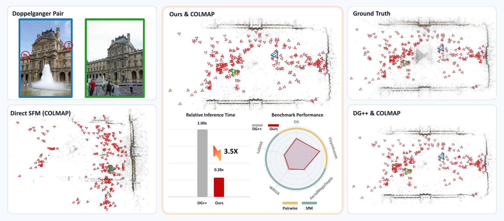
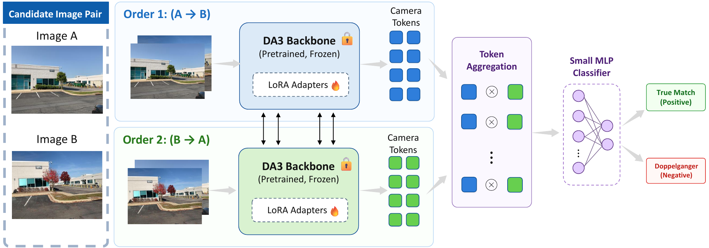
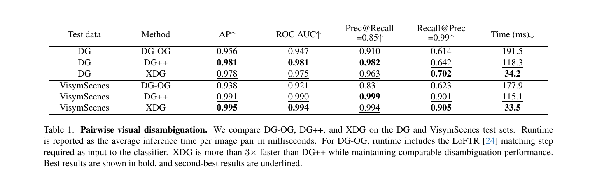
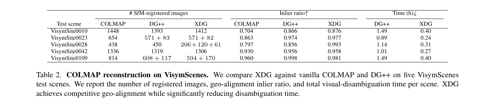
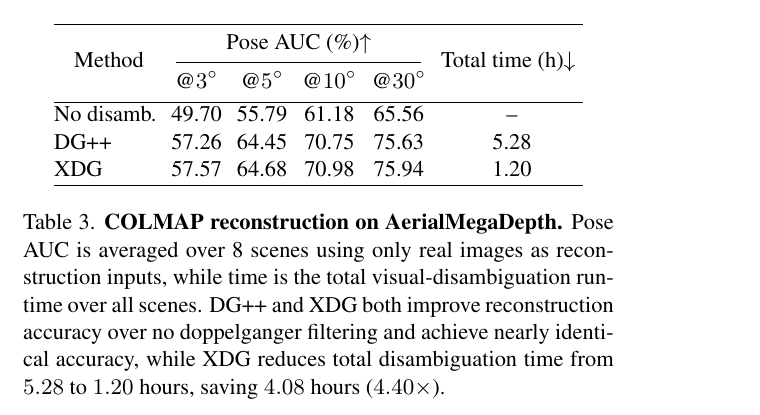
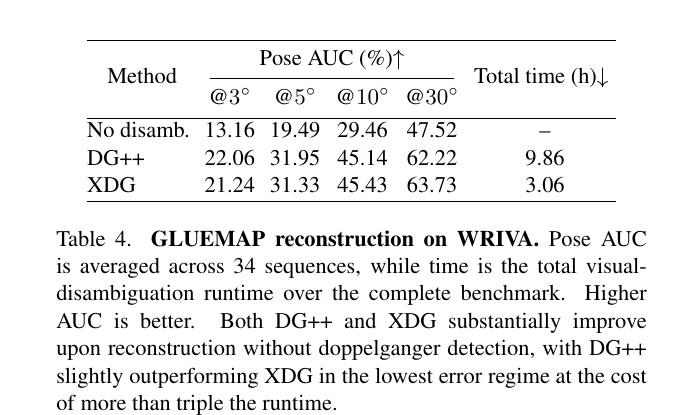
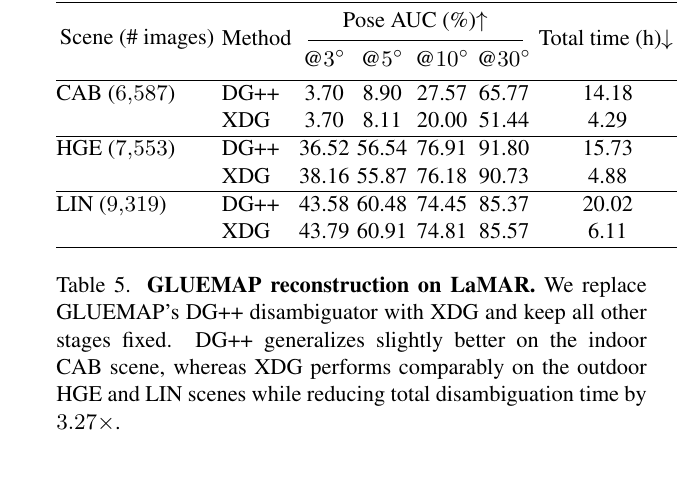
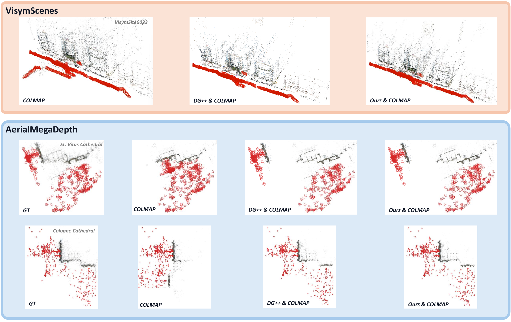
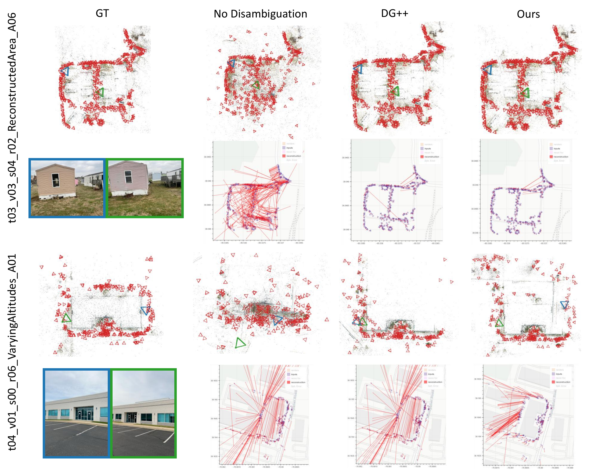

Abstract
Visual aliasing, also known as the doppelganger problem, remains a key challenge for structure-from-motion (SfM): visually similar but physically distinct surfaces can produce incorrect image matches and degrade reconstruction quality. Previous work mitigates this issue with geometry-aware foundation-model features, but places a heavy transformer classifier on top of the backbone, making large-scale disambiguation expensive. We introduce XDG, an efficient visual disambiguation model designed for scalable SfM. Our key observation is that a 3D foundation model already performs the cross-view geometric reasoning necessary for visual disambiguation, so doppelganger classification should adapt the backbone representation directly rather than relearn pair reasoning in a separate heavy decoder. XDG fine-tunes Depth Anything 3 with lightweight LoRA adapters and repurposes its camera tokens as compact pair-level classification tokens. A compact MLP head predicts whether a candidate image pair observes the same 3D surface. Extensive experiments show that XDG provides a favorable accuracy-efficiency tradeoff: it remains competitive with the state-of-the-art disambiguation method across pairwise and reconstruction benchmarks and delivers more than a 3x inference speedup. On individual LaMAR scenes containing thousands of images, XDG saves more than 10 hours of visual disambiguation processing.
Method

Results





Qualitative Reconstructions


Citation
@misc{chen2026xdgacceleratedvisualdisambiguation,
title = {XDG: Accelerated Visual Disambiguation},
author = {Gonglin Chen and Ben Southall and Hanyuan Xiao and Wenbin Teng and Haolin Xiong and Tianwen Fu and Junyi Ouyang and Kshitij Singh Minhas and Supun Samarasekera and Rakesh Kumar and Yajie Zhao},
year = {2026},
eprint = {2608.29733},
archivePrefix = {arXiv},
primaryClass = {cs.CV},
url = {https://arxiv.org/abs/2608.29733}
}Acknowledgments
This material is based upon work supported by the Intelligence Advanced Research Projects Activity under prime Contract No. 140D0423C0034. The U.S. Government is authorized to reproduce and distribute reprints for governmental purposes notwithstanding any copyright annotation thereon. Disclaimer: The views and conclusions contained herein are those of the authors and should not be interpreted as necessarily representing the official policies or endorsements, either expressed or implied, of IARPA, DOI/IBC, or the U.S. Government.